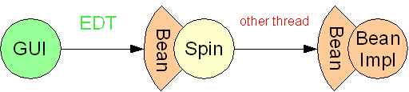
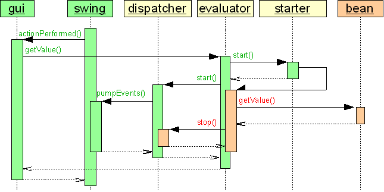
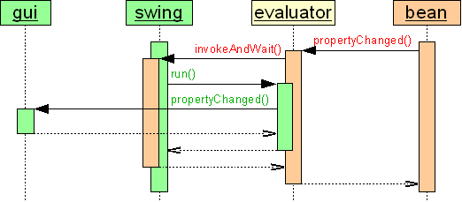

Spin is a transparent threading solution for non-freezing Swing applications.
Swing is the standard component architecture for developing Java desktop
applications. Its exhaustive collection of widgets is the foundation for
easy development of rich graphical user interfaces (GUI).
Alas every non trivial GUI sooner or later encounters the problem of
"freeze".
This annoying behaviour is experienced by users every time the application
performs extensive calculations or blocks for network or disk I/O.
In this document we will explain the reason for this problem and explore different techniques to prevent Swing GUIs from "freezing". We will present our project named Spin which offers a - to our knowledge - revolutionary new approach. It offers transparent thread handling with minimal impact on your application code.
Spin is hosted at
In this section we take a look at a naive GUI implementation that shows how
Swing freezes in case the application programmer doesn't take any special
actions against it.
We also describe the problem of calls into Swing components triggered by any
other thread than the event dispatch thread.
Swing is not designed for multi threading, so let us first recall the single
threading rule of every Swing GUI:
Access to a (visible) Swing component has to occur in the event dispatch thread.
The event dispatch thread (short EDT) is responsible to process all GUI related events, e.g. notifying listeners of user input, repainting dirty regions or updated areas. All these events are enqueued and treated sequentially - if one of them takes a long time to be processed, all further events will have to wait.
In the tables throughout this document the left column represents a Swing GUI component, the right column represents a non visual multithreaded bean that encapsulates extensive calculations. Code run on the EDT is shown in green and code called by any other thread is shown in red.
As you can see in the upper half of the following table, the GUI calls the
method getValue() on the bean when an action is performed.
The event dispatch thread is routed from the GUI to the bean. While it is
performing its calculations no further swing events can be processed - the GUI
freezes.
One of these queued events is the repaint of the label triggered by
label.setText("..."). When getValue() returns, the
text of the label is changed again before the previous text was painted.
So in fact "..." is never seen:
| GUI | BeanImpl |
public void actionPerformed(ActionEvent e)
{
label.setText("...");
label.setText(bean.getValue());
}
public void propertyChange(PropertyChangeEvent ev)
{
label.setText((String)ev.getNewValue());
}
|
public String getValue()
{
String value;
// extensive calculation
return value;
}
public void setValue(String value)
{
this.value = value;
firePropertyChange(value);
}
|
The lower half of the table shows what happens if setValue() is
invoked on the bean on another thread. The listeners are notified (GUI
implements java.beans.PropertyChangeListener and is registered as
a listener for changes of the bean), triggering a call to
propertyChange() on the GUI. The text of the label is altered
on the calling thread, violating the Swing threading rule.
The color distribution gives a hint where to search for problems of this
implementation:
Green rows of code in the right column result in a
GUI freeze, red rows in left column show a
violation to the Swing threading rule.
One obvious solution to the problems seen in the previous section is to shift
the invocation of getValue() from the EDT to a separate thread.
When this method returns we must not propagate the result to a Swing component
though. We have to return control to the EDT instead. This can be achieved via
SwingUtilities.invokeLater() which will use our Runnable to
correctly change the label's text on the EDT:
| GUI | BeanImpl |
public void actionPerformed(ActionEvent e)
{
label.setText("...");
new Thread(new Runnable()
{
public void run()
{
final String value = bean.getValue();
SwingUtilities.invokeLater(new Runnable()
{
public void run()
{
label.setText(value);
}
});
}
}).start();
}
public void propertyChange(final PropertyChangeEvent ev)
{
SwingUtilities.invokeAndWait(new Runnable()
{
public void run()
{
label.setText((String)ev.getNewValue());
}
});
}
|
public String getValue()
{
String value;
// extensive calculation
return value;
}
public void setValue(String value)
{
this.value = value;
firePropertyChange(value);
}
|
Now what happens if the bean informs the GUI about a value-change triggered
by another thread? In propertyChange() we pass a runnable to the
EDT via SwingUtiltites.invokeAndWait() that can safely alter the
label.
Let's take a look at the colors once again:
On the right there is only red - so we achieved a
non freezing GUI.
The left column is almost totally green. Since we
restrict changes to Swing components to these green
rows we are honouring the Swing threading rule too.
But the red rows on the left make things
difficult:
The programmer of the GUI always has to know which thread is stepping through
what part of the code - without any visual help of thread-coloring.
Any mistake reintroduces the problems mentioned above.
SwingWorker is a utility class that aims to ease the efforts to write a non-freezing GUI. Although not included in the standard Java distribution it is maintained by the Swing team and downloadable at The Swing Connection.
As you can see in the following table a SwingWorker removes some of the visual
clutter seen in the previous section. To use it you have to subclass it,
placing extensive calculations into method construct().
In finished() you can alter the label because this method is called
on the EDT. This is similar to our previous solution but this time the threading
is handled by the superclass:
| GUI | BeanImpl |
public void actionPerformed(ActionEvent e)
{
label.setText("...");
new SwingWorker()
{
public Object construct()
{
return bean.getValue();
}
public void finished()
{
label.setText((String)getValue());
}
}).start();
}
public void propertyChange(final PropertyChangeEvent ev)
{
SwingUtilities.invokeAndWait(new Runnable()
{
public void run()
{
label.setText((String)ev.getNewValue());
}
});
}
|
public String getValue()
{
String value;
// extensive calculation
return value;
}
public void setValue(String value)
{
this.value = value;
firePropertyChange(value);
}
|
The SwingWorker offers no support for our notification problem so we stick to
our previous solution in propertyChange().
What about the colors?
The situation hasn't really improved. The indentation of code was minimized but
the red and green colors
in the GUI stay the same. So the problem above isn't resolved yet.
Now let's take a look at the Spin solution. The following table shows the code:
| GUI | Spin | BeanImpl |
public void actionPerformed(ActionEvent e)
{
label.setText("...");
label.setText(bean.getValue());
}
public void propertyChange(PropertyChangeEvent ev)
{
label.setText((String)ev.getNewValue());
}
|
public String getValue()
{
String value;
// extensive calculation
return value;
}
public void setValue(String value)
{
this.value = value;
firePropertyChange(value);
}
|
Hey wait a minute! It's the same code as shown in the first table. But the colors have changed - the GUI is completely green and the bean is red - how can this be?
Spin makes this solution possible - as you can see with no impact on
the old code. The yellow column in the middle handles
all threading issues transparently.
All we have to do is to spin-off the bean from the EDT. For this we
wrap the bean in an instance of type Spin.
The result can safely be casted to any interface the bean (or one of its
superclasses) implements. The best place to do this is before a reference to
this bean is passed to a GUI component (why bother the programmer of the GUI
with this little detail):
bean = (Bean)Spin.off(bean);
The only restriction here is that the Bean has to be broken into interface and
implementation. The GUI components will only use the interface!
The following picture shows how Spin connects the GUI and the bean.
Calls on the EDT from the GUI to the bean are brokered to other threads
invocating the beans functionality:

(The need for an interface isn't really a restriction. It is generally recommended to separate an application in different layers which communicate through well defined interfaces. The GUI of an application is certainly part of another layer than extensive calculations or I/O operations.)
For the notification of changes to the bean we use an inverse technique.
We must spin-over any invocation of a GUI callback-method on another
thread to the EDT. This time we wrap the GUI in a PropertyChangeListener to
be added as a callback (this could be any interface like
foo.DataChangedListener):
bean.addPropertyChangeListener((PropertyChangeListener)Spin.over(gui);

This is all you have to know to get Spin to work in your project. If you're interested in the internals of Spin go on to the next section.
Spin is built on top of virtual proxies and a technique borrowed from
the java.awt.Dialog component:
While a modal dialog has to wait for user input, the EDT is rerouted to the
swing event processing to handle further events.
The following diagram shows how this is used in Spin. Each invocation
of a beans method is intercepted and handled by an instance of the inner class
Invocation. The call to getValue() is executed asynchronously on
another (possibly pooled) thread while the method pumpEvents() is executed on
the EDT.
Once the call to the bean returns the dispatching of events is stopped and the
EDT is free to return to the standard event processing:

For asynchronous notifications from the bean to the GUI we reuse the technique
introduced in the previous sections.
But this time the call to invokeAndWait() is encapsulated by
Spin with an instance of the inner class Invocation:

Please take a look at the API for further details.
Although Spin handles threading transparently there are caveats with spin-off that you should be aware of:
Cancel functionality
and the retrieval of the current state of invocation or intermediate
results (e.g. for updating a progress bar or incremental filling of a
table).The core of Spin consists only of one class but it is a powerful solution for non-freezing Swing applications. Spin enforces good application design by separating the GUI and non-visual components through interfaces. If it is used wisely in an application framework, the GUI programmers will never have to think about threads again.
Spin comes with several demonstration classes that show how to solve formerly challenging Swing programming problems with ease:
We have used Spin succesfullly in several projects to wrap all remote communication (RMI) between rich-clients and the application server.
The Spin project is influenced by the
Foxtrot project. Foxtrot is the
inventor of the Synchronous Model (Spin has adopted this
technique) but uses an API that is similar to SwingWorker.
It offers a subset of Spins features - it lacks transparent exception
handling and offers no solution for asynchronous callbacks:
public void actionPerformed(ActionEvent e)
{
label.setText("...");
String text = (String)Worker.post(new Job()
{
public Object run()
{
return bean.getValue();
}
});
label.setText(text);
}
The following code shows how Foxtrot can be 'simulated' with Spin
(if you want to restrict yourself by using only one generic interface named
Job or what-ever-you-like):
public void actionPerformed(ActionEvent e)
{
label.setText("...");
String text = ((Job)Spin.off(new Job()
{
public Object run()
{
return bean.getValue();
}
})).run();
label.setText(text);
}